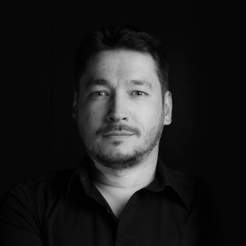

Wenn alles einfach wird, braucht es Menschen, die wissen, worauf es wirklich ankommt.
KI-Assistent:
Die Tools werden klüger.
-
Das Problem verstehen
Bevor man loslegt, stellt man sicher, dass man das richtige Problem löst. Eine gute Frage spart mehr Zeit als eine schnelle Antwort.
-
Effizienter werden mit KI
KI übernimmt die Routine. So bleibt mehr Zeit für das, was Erfahrung und Urteilsvermögen braucht.
-
Jedes Ergebnis verifizieren
Nichts geht raus, was man nicht erklären kann. Jedes Ergebnis wird geprüft, hinterfragt und verantwortet.

Entwickler von Beruf und aus Leidenschaft.
Seit über 20 Jahren entwickle ich für das Web. Mein Ziel ist, Komplexität aufzubrechen, statt Systeme noch komplexer zu machen.
Fast genauso lange ist diese Seite mein persönliches Experimentierfeld. Ich baue sie immer wieder neu und probiere aus, was sich im Web bewährt und was nicht.
Hier wird noch gebaut.
-
Das Quiz
Zehn Vorschläge einer KI, mal Code, mal Alltag. Du entscheidest, danach sagen die KI und ich, wie wir es sehen.
-
Das Terminal
Eine Kommandozeile im Browser, mit ein paar versteckten Befehlen. Einer davon ist ein Spiel.
-
Folien statt Scrollen
Am großen Bildschirm bringen Mausrad, Trackpad oder Pfeiltasten die Seite immer genau einen Abschnitt weiter.
Etwas, worauf es ankommt?
Alex Richtig.Daneben.Er ist wütend, nicht neugierig. Das löst kein Prompt.